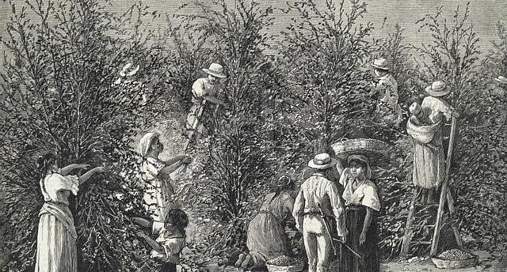
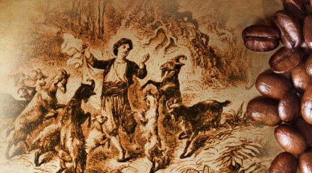
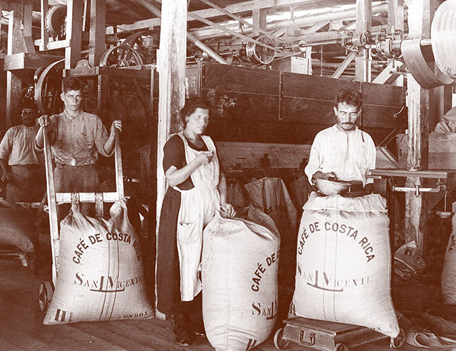
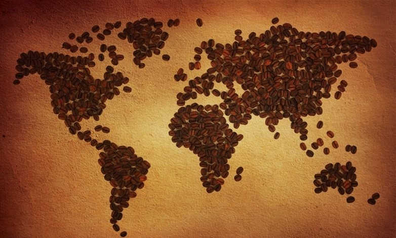

KAF'S CAFE

Lịch sử phát triển của cà phê từ thuở sơ khai
Nếu bạn là dân nghiện cà phê thì ít nhiều có những câu chuyện về nó. Vậy có bao giờ bạn trăn trở rằng, cà phê xuất hiện như thế nào, tại sao lại gọi là cà phê, nó đến từ đâu, tại sao Việt Nam lại trồng được nhiều cà phê như vậy? Vậy lịch sử phát triển của cà phê ra sao ?

Cà phê là một loại thức uống được ủ từ hạt cà phê rang, lấy từ quả của cây cà phê. Các giống cây cà phê được bắt nguồn từ vùng nhiệt đới châu Phi và các vùng Madagascar, Comoros, Mauritius và Reunion trên Ấn Độ Dương. Giống cây này được xuất khẩu từ châu Phi tới các nước trên thế giới và hiện nay đã được trồng tại tổng cộng hơn 70 quốc gia, chủ yếu là các khu vực nằm gần đường xích đạo thuộc châu Mỹ, Đông Nam Á, Ấn Độ và châu Phi.
>Gốc gác của cây cà phê
Sự xuất hiện của cà phê ở Việt Nam
Chuyện kể răng vào năm 1671, những người chăn dê ở Kaffa (thuộc Ethiopia ngày nay) phát hiện ra một số con dê trong đàn sau khi ăn một cành cây có hoa trắng và quả màu đỏ đã chạy nhảy không mệt mỏi cho đến tận đêm khuya. Họ đem chuyện này kể với các thầy tu tại một tu viện gần đó. Khi một người chăn dê trong số đó ăn thử loại quả màu đỏ đó anh ta đã xác nhận công hiệu của nó. Sau đó các thầy tu đã đi xem xét lại khu vực ăn cỏ của bầy dê và phát hiện ra một loại cây có lá xanh thẫm và quả giống như quả anh đào. Họ uống nước ép ra từ loại quả đó và tỉnh táo cầu nguyện chuyện trò cho đến tận đêm khuya. Như vậy có thể coi rằng nhờ chính đàn dê này con người đã biết được cây cà phê.

Lịch sử phát triển cà phê
Loại cây cà phê đầu tiên chỉ được trồng ở châu Phi và Ả Rập, nhưng sau được đem phân bố ở nhiều nơi khác trên thế giới với điều kiện hợp phong thổ.
Người Hà Lan đem phổ biến việc canh tác cà phê đến các xứ thuộc địa của họ. Năm 1710 thương gia Âu châu đem cây cà phê về và trồng thử trong các khu vườn sinh vật ở Âu châu. Amsterdam là nơi đầu tiên cây cà phê nảy mầm trên lục địa châu Âu.

Cà phê được trồng và phát triển rộng rãi trên thế giới
Sự cạnh tranh về cà phê ngày càng căng thẳng khi nhu cầu về thức uống này tăng cao, người Ả Rập đã không thể duy trì vị thế độc quyền của mình và để những nước khác có được cây giống. Nhà truyền giáo, du khách, thương nhân và người dẫn thuộc địa tiếp tục mang các loại hạt cà phê đi khắp thế giới, chúng được gieo trồng khắp nơi. Kết quả là chỉ trong vòng 100 năm xuất hiện rất nhiều loại cà phê khác nhau và cà phê là loại hàng hóa phổ biến nhất trên thế giới. Thế kỷ 18, cà phê đã trở thành một trong những cây trồng xuất khẩu mang lại lợi nhuận cao nhất trên thế giới.

Cà phê ở Việt Nam
Đồn điền cà phê đầu tiên được lập ở Việt Nam là do người Pháp khởi sự ở gần Kẻ Sở, miền Bắc vào năm 1888. Giống cà phê arabica (tức cà phê chè) được trồng ở vùng ven sông. Sau việc canh tác cà phê lan xuống vùng Phủ Lý, Ninh Bình, Thanh Hóa, Nghệ An, Kon Tum và Di Linh. Năm 1937-1938 tổng cộng trên lãnh thổ Việt Nam có 13.000 ha cà phê, cung ứng 1.500 tấn. Hiện tại,Việt Nam có ba loại cà phê chính, đó là cà phê chè (arabica), cà phê vối (robusta), cà phê mít (lyberica)

Special Items
 |
 |
 |
| Soft Deli Cup 10$ |
Coffee Art 12,5$ |
Speciality Tea 13$ |
Liên hệ
Công Ty cổ Phần Kaf's cafe
Địa chỉ: Tầng 3-4, Tòa nhà Việt Tower, số 01 Phố Thái Hà, Phường Trung Liệt, Quận Đống Đa, Thành phố Hà Nội
Điện thoại: O369142342 - Mã số thuế: 01087874679
Giấy phép mạng xã hội số 370/GP-BTTTT do Bộ Thông tin Truyền thông cấp ngày 09/09/2007